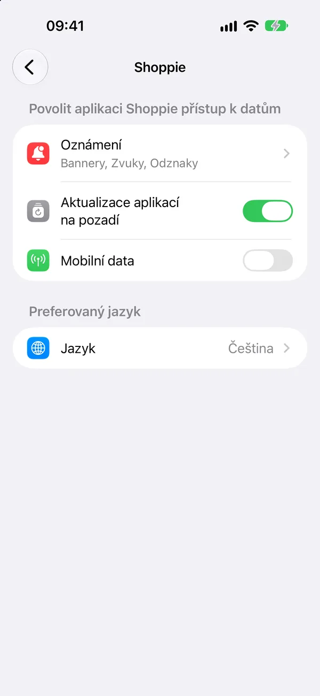
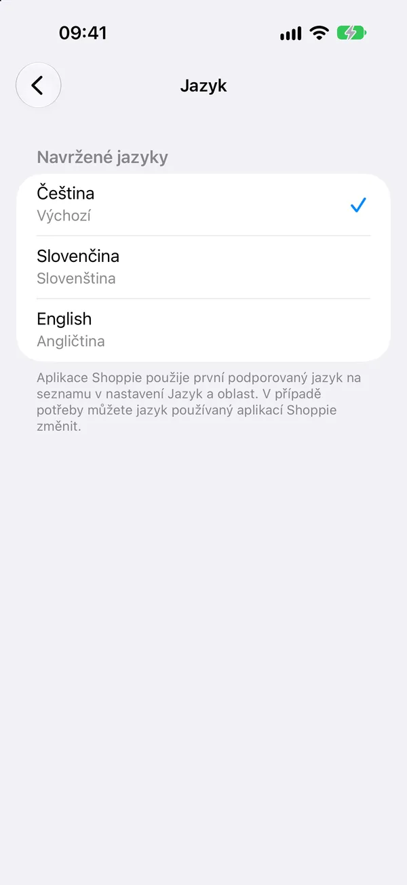

Jak změnit jazyk Shoppie
-
Krok 1 Otevřete Nastavení iPhonu
Otevřete Nastavení iPhonu → Aplikace → Shoppie a klepněte na Preferovaný jazyk → Jazyk.

-
Krok 2 Vyberte jazyk
V seznamu Navržené jazyky vyberte Slovenčina, Čeština nebo English. Shoppie se přepne při dalším otevření.

Časté otázky
V jakých jazycích je Shoppie?
Ve slovenštině, češtině a angličtině.
Proč nevidím volbu jazyka?
iPhone ji ukáže, když máte v Nastavení → Obecné → Jazyk a oblast přidaných víc jazyků.
Další otázky najdete na stránce Podpora.